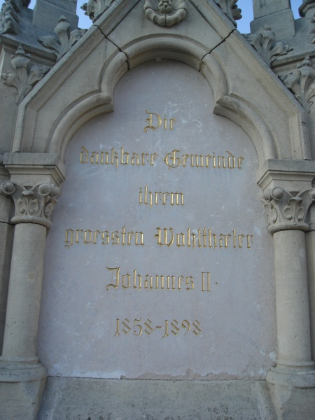
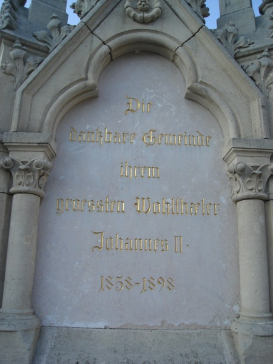

40. výročí vlády knížete Jana II.
Překlad z knihy E. Reichel: Johann II. Fürst von und zu Liechtenstein, sein Leben und Wirken. Eisgrub 1932.
Mezníkem v životě zesnulého knížete Jana II. bylo 40-leté výročí jeho vlády. Zcela podle jeho tiché povahy byla také slavnost oslavena jednoduchým tichým způsobem, přece však byly všechny projevy na počest knížete velmi vřelé a srdečné.
Samotný jubilejní den strávil Jan II. v ústraní na zámku v Lednici se svým bratrem Františkem, tehdejším rakousko-uherským velvyslancem na carském dvoře v Petrohradě, se svými sestrami Luisou hraběnkou z Fünfkirchen a Henriettou kněžnou z Lichtenštejna, se svými synovci princi Janem, Jindřichem, Karlem a Jiřím z Lichtenštejna a také se svým přítelem hrabětem Maxem Hardeggem. Odmítl veškeré pocty a ovace, jež mu tehdy byly určeny, přesto mu tehdy při příležitosti oslavy přišlo mnoho set blahopřání, děkovných dopisů a oficiálních psaní od obcí, dobročinných sdružení a ústavů, které neustále štědrou rukou podporoval. Zvláštní poctu mu přichystal „Moravsko-slezský lesnický spolek“, jehož byl kníže čestným členem, a to předáním umělecky upravené adresy.
Jediné nařízení, které kníže Jan II. na tento den vydal, bylo, aby byly ve všech patronátních kostelích konány zádušní mše za jeho zemřelého otce, knížete Aloise II. Taková zádušní mše se konala také ve Vídni v kostele Schottenkirche a zúčastnili se jí všichni úředníci lichtenštejnské dvorní kanceláře.
Zřízení jubilejní kašny v Lednici
40-leté výročí vlády knížete bylo pro jeho rodnou obec Lednici příležitostí poděkovat poctou Janu II. za jeho často prokazovaná dobrodiní. Návrh tehdejšího knížecího ředitele stavebního úřadu a pozdějšího profesora Německé techniky v Praze Karla Weinbrennera zřídit na náměstí kašnu s portrétním medailónem byl přijat městskou radou a došlo také k jeho realizaci.
Kníže, který byl o tomto záměru zpraven, poslal následující odpověď: „Ačkoli jsem si obecně za své snažení nečinil nárok na veřejné uznání, přece se nemohu vzepřít tomuto přání, v němž spatřuji projev laskavého smýšlení a vděčnosti za to, co jsem pro své rodiště udělal, a využiji nynější příležitost, abych ujistil obec Lednici o trvání své srdečné přízně.“
Na základě tohoto psaní určila obec Lednice den 40. výročí nástupu vlády Jana II. za den, kdy bude tento pomník odhalen. Prostranství okolo kašny bylo pro oslavu uzavřeno girlandami a zeleně ovinutými sloupy a uvnitř byla postavena tribuna pro členy knížecího domu. Po slavnostní velké mši v zámeckém kostele se všechny spolky spolu s duchovenstvem vydaly na místo konání oslavy. Když se členové knížecího domu přiblížili k pomníku, začala hrát kapela lichtenštejnskou národní hymnu, načež následovalo vysvěcení kašny. Potom držel starosta Anton Reck slavnostní řeč, která byla zakončena třikrát opakovanou slávou největšímu dobrodinci obce, knížeti Janu II. Shromáždění se nyní odebrali k zámku, kde je očekával kníže. Zde vděčná obec Lednice holdovala knížeti, načež byla slavnost uzavřena trojnásobným zvoláním slávy.
Kašna, která je provedena v gotickém (novogotickém – pozn. překl.) stylu, představuje trojhranný sloup, jenž je ozdoben věžičkou. Na jedné straně má portrétní medailón s iniciálami knížete, na druhé je na mramorové tabuli tento nápis: „Gott segne das Haus Liechtenstein“ (t.j. „Bůh žehnej lichtenštejnskému domu“ – pozn. překl.) a na třetí straně jsou slova: „Die Gemeinde Eißgrub ihrem größten Wohltäter, dem Fürsten Johann II., 1858 bis 1898“ (t.j. „Obec Lednice svému největšímu dobrodinci, knížeti Janu II., 1858 až 1898“ – pozn. překl.). Na špičce je upevněna mistrně provedená postava anděla strážného, jenž ochraňuje a drží erb lichtenštejnského domu; návrh kašny pochází od profesora Karla Weinbrennera.

 

Jubilejní kašna v Lednici.